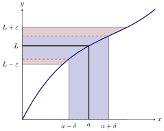
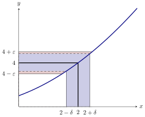

We give a mathematically precise definition of a limit.
Recall that intuitively, the limit of as approaches is , written if the value can be
made as close as one wishes to for all sufficiently close, but not equal to, . This leads
us to a precise definition of a limit.
The definition of a limit
The
limit of as goes to is , if for every there is a so that whenever
If no such value of can be found, then we say that the
limit does not
exist.
In the figure below, we see a geometric interpretation of this definition.

Now we are going to get our hands dirty, and really use the definition of a
limit.
Show that .
We want to show that for any given , we can find a such that whenever
.

Start by factoring the left-hand side of the inequality above Since we are going to
assume that , we will focus on the factor . Since is assumed to be close to , suppose
that . In this case and so we want
Recall, we assumed that , which is equivalent to . Hence we must set .
When dealing with limits of polynomials, the general strategy is always the same. Let
be a polynomial. If showing one must first factor out from . Next bound and
estimate the largest possible value of for , call this estimation . Finally, one must set
.
Tolerance problems